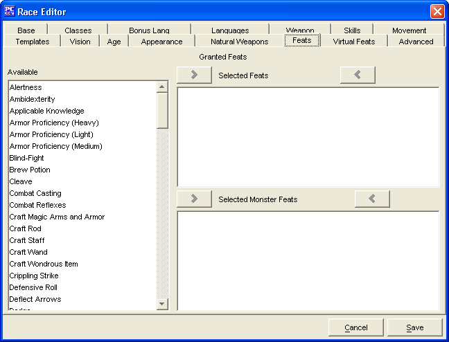

Race Editor: Feats Tab

The
Feats Tab
is used to add Granted Feats for
the Race being created.
The three
Granted Feats
windows,
Available,
Selected Feats
and
Selected Monster Feats
are used to create a list
of Granted Feats.
-
The two sets of
Add
and
Remove
buttons will move the highlighted Granted
Feats between the 3 windows. Double clicking does not work in this
window.
-
The feats in the
Selected Feats
window are
bonus feats that all members of this race automatically have.
-
Selected Monster Feats
window are bonus feats
that all members of this monster race automatically have (Note:
This is used Only with Default Monsters ON).
The
Cancel
and
Save
buttons,
which appear on every tab, are used to either cancel the Race
creation or save it to the customRaces.lst file.